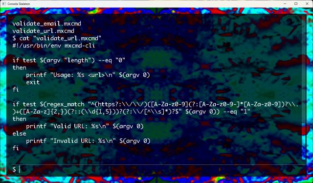

MXCMD Shell Scripting Language Guide
Welcome to the comprehensive guide for MXCMD, a lightweight shell scripting language.
MXCMD Beta

Platform: Windows x64 (MSYS2/MinGW-w64)
We’re pleased to introduce MXCMD Beta—an early release of our command-line interpreter tailored for the MSYS2/MinGW-w64 environment on Windows x64. This beta build is provided strictly for testing and feedback; features are subject to change as we refine the tool. Beta now includers an example module for SDL for creating games and other graphics demos so file size is larger.
Now incldues
Console created with OpenGL/SDL2 read the README.txt for more informtion. This is why file size is larger.
Download:
mxcmd-release.v1.10 -
tar.gz -
zip
How to build from source:
Building from Source on Linux/Unix first install the required packages, readline, git, g++, cmake.:
git clone https://github.com/lostjared/libmx2.git --depth 1
cd libmx2/cmd
mkdir build
cd build
cmake .. -DCMD=ON -DSHARED=ON
cmake --build .
sudo cmake --install .
Then at your shell prompt:
$ mxcmd-cli
[mxcmd prompt appears]